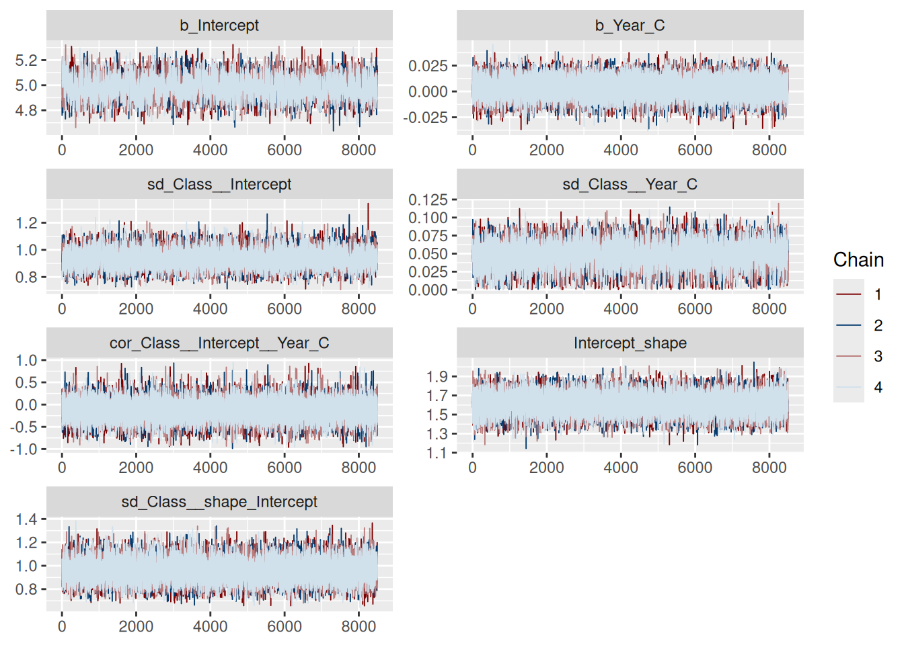
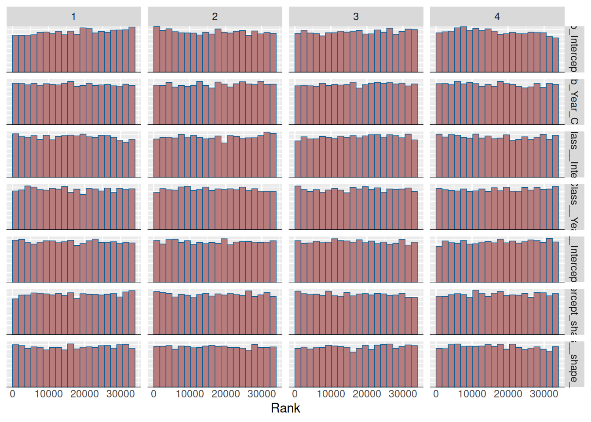
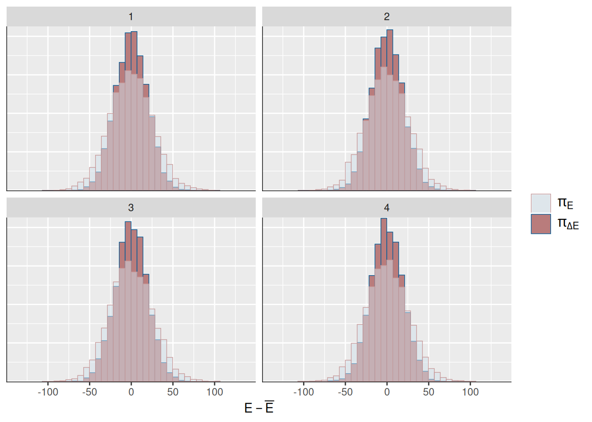
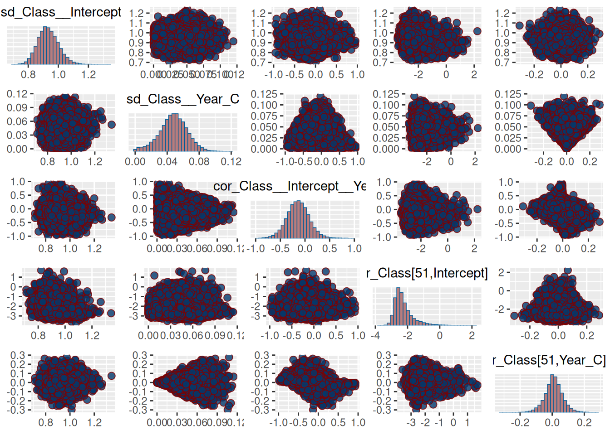

── Attaching core tidyverse packages ──────────────────────── tidyverse 2.0.0 ──
✔ dplyr 1.1.4 ✔ readr 2.1.5
✔ forcats 1.0.1 ✔ stringr 1.5.2
✔ ggplot2 4.0.0 ✔ tibble 3.3.0
✔ lubridate 1.9.4 ✔ tidyr 1.3.1
✔ purrr 1.1.0
── Conflicts ────────────────────────────────────────── tidyverse_conflicts() ──
✖ dplyr::filter() masks stats::filter()
✖ dplyr::lag() masks stats::lag()
ℹ Use the conflicted package (<http://conflicted.r-lib.org/>) to force all conflicts to become errors
library(CASdatasets)
Loading required package: xts
Loading required package: zoo
Attaching package: 'zoo'
The following objects are masked from 'package:base':
as.Date, as.Date.numeric
######################### Warning from 'xts' package ##########################
# #
# The dplyr lag() function breaks how base R's lag() function is supposed to #
# work, which breaks lag(my_xts). Calls to lag(my_xts) that you type or #
# source() into this session won't work correctly. #
# #
# Use stats::lag() to make sure you're not using dplyr::lag(), or you can add #
# conflictRules('dplyr', exclude = 'lag') to your .Rprofile to stop #
# dplyr from breaking base R's lag() function. #
# #
# Code in packages is not affected. It's protected by R's namespace mechanism #
# Set `options(xts.warn_dplyr_breaks_lag = FALSE)` to suppress this warning. #
# #
###############################################################################
Attaching package: 'xts'
The following objects are masked from 'package:dplyr':
first, last
Loading required package: survival
library(brms)
Loading required package: Rcpp
Loading 'brms' package (version 2.23.0). Useful instructions
can be found by typing help('brms'). A more detailed introduction
to the package is available through vignette('brms_overview').
Attaching package: 'brms'
The following object is masked from 'package:survival':
kidney
The following object is masked from 'package:stats':
ar
Attaching package: 'tidybayes'
The following objects are masked from 'package:brms':
dstudent_t, pstudent_t, qstudent_t, rstudent_t
library(posterior)
This is posterior version 1.6.1
Attaching package: 'posterior'
The following objects are masked from 'package:stats':
mad, sd, var
The following objects are masked from 'package:base':
%in%, match
library(bayesplot)
This is bayesplot version 1.14.0
- Online documentation and vignettes at mc-stan.org/bayesplot
- bayesplot theme set to bayesplot::theme_default()
* Does _not_ affect other ggplot2 plots
* See ?bayesplot_theme_set for details on theme setting
Attaching package: 'bayesplot'
The following object is masked from 'package:posterior':
rhat
The following object is masked from 'package:brms':
rhat
\(b_{0j}\) and \(b_{1j}\) represent Class-specific deviations from the overall fixed effects \(\beta_0\) and \(\beta_1\) in the mean model. They are unconstrained real numbers and can be positive or negative. We don’t set the priors on \(b_{0j}\) and \(b_{1j}\) directly, but rather on their standard deviations \(\sigma_0\) and \(\sigma_1\), which control the variability of the random effects across Classes.
The priors on \(\sigma_0\) and \(\sigma_1\) are half-t distributions, weakly informative priors for scale parameters in hierarchical models. The half-t prior ensures that the standard deviations are positive, as required.
This is important to conceptualize: the prior we specify with class=sd lives on the hyperparameters\(\sigma_0\), \(\sigma_1\), and \(\rho\), not on the group-level realizations \(b_{0j}\) and \(b_{1j}\) themselves. You don’t set priors directly on the \(b\)’s; you set a prior on the population distribution that generates them.
These are going to appear as sd_Class__Intercept and sd_Class__Year_C in the MCMC output.
When setting the priors class = "sd" are standard deviations and brms (and thus Stan) declares them with a lower bound of 0 (<lower=0>). brms has these as half-student-t on the SD automatically, a Student-t truncated on \([0, \infty]\).
The prior on class=sd applies to the scaling factors \(\sigma_k\) in this non-centered parameterization. The sampler draws unconstrained standard normal variables \(z_{kj}\), which are then scaled by \(\sigma_k\) to produce the actual random effects \(b_{kj}\). This avoids the “funnel” geometry that can occur with centered parameterizations, leading to better mixing and convergence?
brms class
Parameter type
Mathematical object
Sign constraint
Effect
b
Fixed effects
\(\beta_0,\beta_1,\ldots\)
unconstrained
Regression means; you control via prior(class = b)
sd
Group-level SD
\(\sigma_k\)
≥ 0
Controls variability across groups
cor
Group-level correlation
\(\rho\)
(−1, 1)
Controls correlation of REs
r
Actual REs \(b_{kj}\)
implied from hierarchy
unconstrained
No explicit prior; inherited from hyperparameters
Model Specification
priors <-c(# ---- mean model priors (log-rate link) ----prior(student_t(3, log(100), 0.5), class = Intercept),prior(normal(0, 0.1), class = b, coef ="Year_C"),# ---- random effects for mean ----prior(student_t(3, 0, 1.2), class = sd, group ="Class", coef ="Intercept"), # on sigma_0prior(student_t(3, 0, 0.6), class = sd, group ="Class", coef ="Year_C"), # on sigma_1prior(lkj(2), class = cor, group ="Class"), # on rho# ---- shape submodel priors (on log(shape)) ----# Instead of prior for the fixed shape, we have hierarchical shape submodel# The link for "shape" is log (positive parameter), these priors live on log(shape) scale# By default, the random effects in the shape submodel are independent of those in the mean submodel# Intercept on log(shape); choose center consistent with prior belief (e.g., log(3.3))prior(normal(log(3.3), 0.5), class = Intercept, dpar ="shape"), # on alpha_0# Random-intercept SD for log(shape) by Classprior(student_t(3, 0, 0.5), class = sd, group ="Class", dpar ="shape") # on sigma_shape)mod_3_brms <- brms::brm(bf(# mean submodel Loss ~offset(log_payroll) +1+ Year_C + (1+ Year_C | Class),# hierarchical dispersion: log(shape) has a random intercept by Class shape ~1+ (1| Class) ),data = comp_loss,family =Gamma(link ="log"), # mean link; shape uses log link internallyprior = priors,chains =4, cores =4,warmup =1500, iter =10000,seed =1821,backend ="rstan",control =list(adapt_delta =0.95, max_treedepth =12),save_pars =save_pars(all =TRUE),refresh =0,# file = "Models/workcomp/brms-shape-hierarchical")
Compiling Stan program...
Start sampling
prior_summary(mod_3_brms)
prior class coef group resp dpar nlpar lb ub
(flat) b
normal(0, 0.1) b Year_C
student_t(3, log(100), 0.5) Intercept
normal(log(3.3), 0.5) Intercept shape
lkj_corr_cholesky(1) L
lkj_corr_cholesky(2) L Class
student_t(3, 0, 2.5) sd 0
student_t(3, 0, 2.5) sd shape 0
student_t(3, 0, 2.5) sd Class 0
student_t(3, 0, 1.2) sd Intercept Class 0
student_t(3, 0, 0.6) sd Year_C Class 0
student_t(3, 0, 0.5) sd Class shape 0
student_t(3, 0, 0.5) sd Intercept Class shape 0
tag source
default
user
user
user
default
user
default
default
(vectorized)
user
user
user
(vectorized)
MCMC Diagnostics - Step-by-Step
draws <- posterior::as_draws_df(mod_3_brms)
quick numeric diagnostics
Column
What it measures
What’s “good”
What’s “bad”
rhat
Between- vs within-chain variance ratio (Gelman–Rubin statistic)
≈ 1.00
> 1.01 → chains not yet mixed
ess_bulk
Effective sample size for the bulk of posterior
≥ 400 per chain (so ≥ ~1600 total is great)
< 100–200 → poor mixing
ess_tail
Effective sample size for tails of posterior
≥ 400 (preferably 1000+)
low tail ESS → poor exploration of extremes
We want all rhat close to 1 (e.g., < 1.01) and all ess_bulk and ess_tail reasonably large (e.g., > 400) for all important parameters and key derived quantities (e.g., \(\mu\) and \(\kappa\)).
Numerical diagnostics (rhat, ess) tell us did the chains mix globally, but not whether the NUTS integrator encountered local pathologies.
MCMC Trace & Rank Plots for key Parameters
Should be well-mixed. Long drifts or “barcodes” imply poor mixing/stickiness.
pars_core <-c("b_Intercept","b_Year_C","sd_Class__Intercept","sd_Class__Year_C","cor_Class__Intercept__Year_C","Intercept_shape","sd_Class__shape_Intercept")bayesplot::mcmc_trace(draws, pars = pars_core, facet_args =list(ncol =2))

Should be approximately uniform across chains.
bayesplot::mcmc_rank_hist(draws, pars = pars_core)

Quick Overall Check with rstan Diagnostics
rstan::check_hmc_diagnostics(mod_3_brms$fit)
Divergences:
0 of 34000 iterations ended with a divergence.
Tree depth:
0 of 34000 iterations saturated the maximum tree depth of 12.
Energy:
E-BFMI indicated no pathological behavior.
Divergence Check
Should all be zero. Any divergence is a red flag for NUTS: it means the integrator struggled in some region of the posterior geometry. Oftehn high curvature typical of heierarchical “funnels”. Prefer to revisit the model/parameterization rather than just increase adapt_delta or masking the problem.
This plot shows the integrator followed the posterior “energy surface” cleanly; there are no problematic regions of extreme curvature or step-size instability.
Energy Bayesian Fraction of Missing Information (E-BFMI)
For each chain. Rule of thumb: E-BFMI < ~0.3 for any chain suggest the momentum-energy geometry is off and HMC may be inefficient (often co-occuring with divergences).
rstan::get_bfmi(mod_3_brms$fit)
[1] 0.5533153 0.5625585 0.5515783 0.5403166
rstan::check_energy(mod_3_brms$fit)
E-BFMI indicated no pathological behavior.
mcmc_nuts_energy(np)
`stat_bin()` using `bins = 30`. Pick better value `binwidth`.
`stat_bin()` using `bins = 30`. Pick better value `binwidth`.

x-axis: energy \(E\) = potential + kinetic energy for each trajectory
Red: marginal ditribution of \(E\)
Blue: distribution of energy changes between successive samples, \(E - \bar{E}\)
If these two distributions differ substantially (e.g., Blue much narrower than Red), then the sampler is not exploring energy levels efficiently, leading to poor mixing.
Here each chain’s Red and Blue histograms overlap almost perfectly and have the same shape.
No chain has a noticeably narrower or more peaked Blue distribution than Red.
This indicates good enery mixing and high E-BFMI values.
Here all four chains explore the same typical energy region → no sign of multimodality.
Energy distributions overlap tightly → efficient Hamiltonian trajectories (which means good exploration of posterior geometry - no chain getting “stuck” in a different region).
Combined with no divergences, R-hat near 1, and good ESS, this means the posterior geometry is smooth and well-scaled.
Chains stuck in different regions of the posterior
Convergence problems
Long asymmetric tails
Energy spikes (high curvature)
Potential divergence risk
Treedepth
Ideally, all iterations at max depth should be zero. Persistent hits at max depth imply geometry that’ hard to traverse or a step size than can’t resolve curvature.
pars_pairs <-c("sd_Class__Intercept","sd_Class__Year_C","cor_Class__Intercept__Year_C","r_Class[51,Intercept]","r_Class[51,Year_C]")mcmc_pairs(div_draws, pars = pars_pairs, np = np)

Downstream quantities: linear predictors & dispersion
The goal of that snippet was to sanity-check derived quantities—the linear predictor on the data scale (\(\mu_i\)) and the shape \(\kappa_i\) for a specific row \(\kappa\). We want to be sure they also have good mixing (ESS, rank-plots), not just the model parameters.
# draws x obs matricesmu_draws <-posterior_linpred(mod_3_brms, transform =TRUE, draws =2000)shape_draws <-posterior_epred(mod_3_brms, dpar ="shape", draws =2000)k <-51L# wrap the numeric vector as a posterior draws object with a namedm_mu <- posterior::draws_matrix(mu_k = mu_draws[, k])dm_shape <- posterior::draws_matrix(kappa_k = shape_draws[, k])# rank histograms (works with a draws_* object)a <- bayesplot::mcmc_rank_hist(dm_mu, pars ="mu_k")b <- bayesplot::mcmc_rank_hist(dm_shape, pars ="kappa_k")# ESS for these derived quantitiesposterior::ess_bulk(dm_mu); posterior::ess_tail(dm_mu)